4位元2進位乘法器
2020-03-09
前一陣子在學怎麼做電路板時就想玩玩邏輯門，所以就做了個4位元乘法器。用了整流子當AND，NPN電晶體當OR，XOR有點複雜所以直接用了CD4070。因為版子上的洞很多，所以想說乾脆用CNC車床來刻。試了幾種刻法後，最後是先在版子上噴漆，然後讓機器打洞跟刻出電路，最後再用化學藥劑把露出的銅吃掉。
影片：
 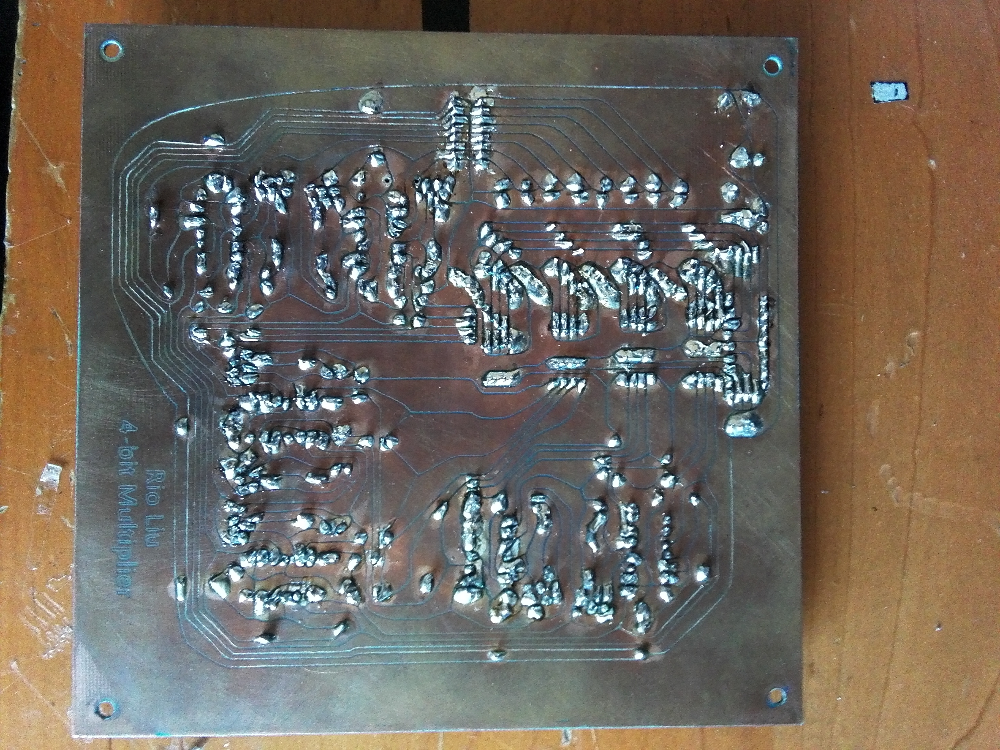
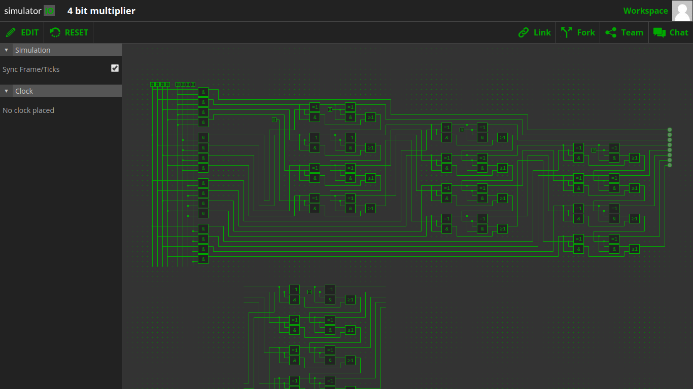
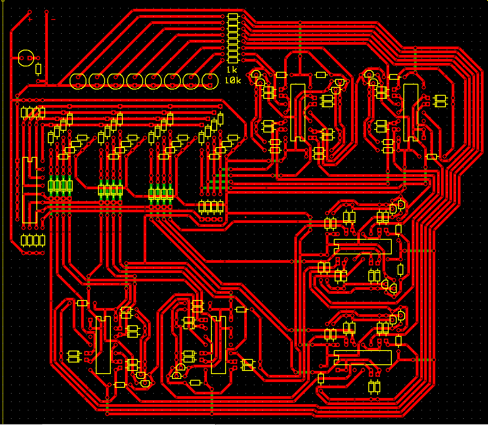
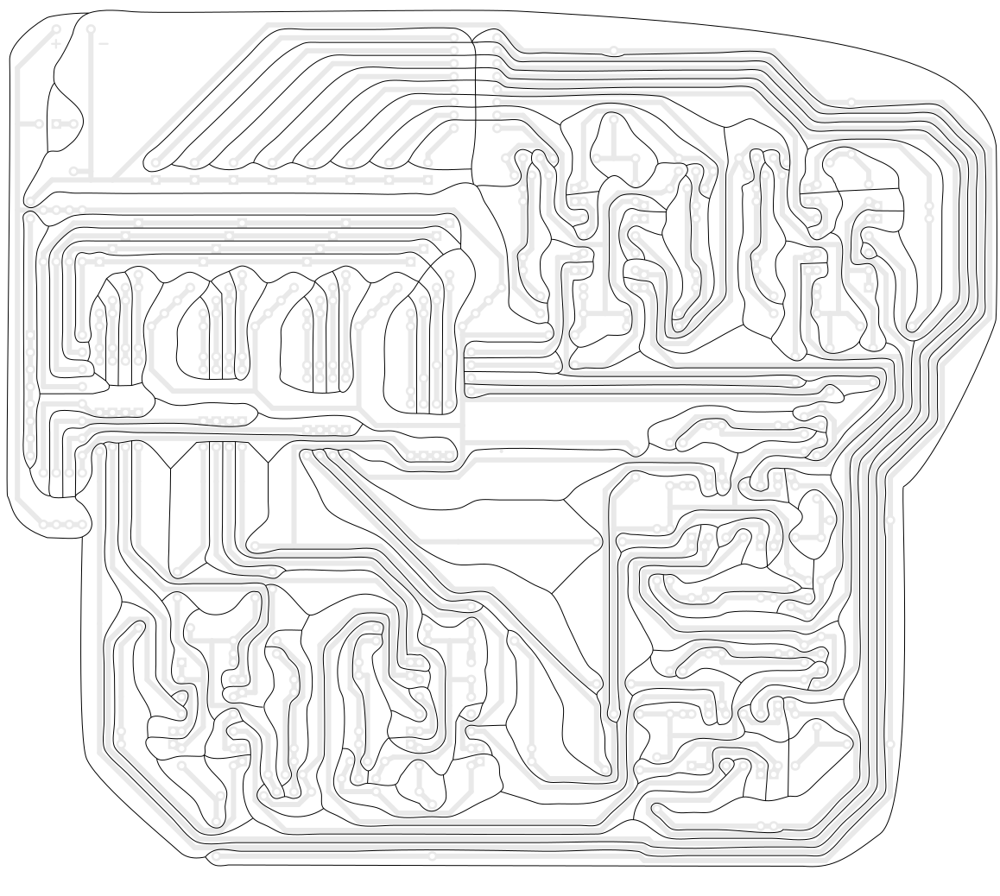
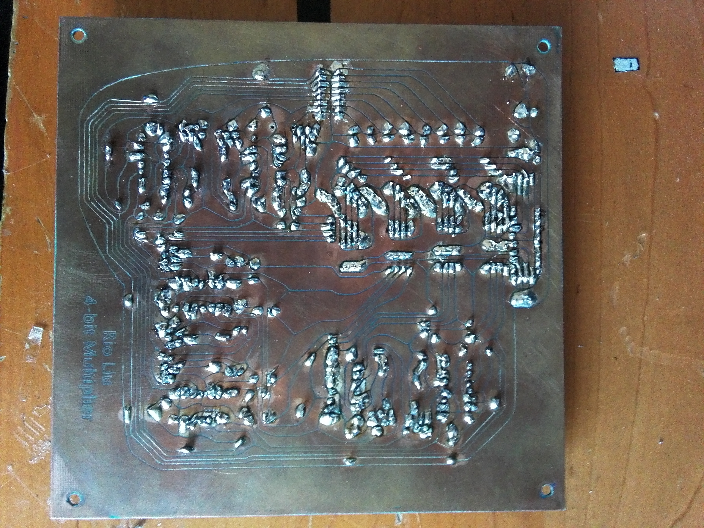
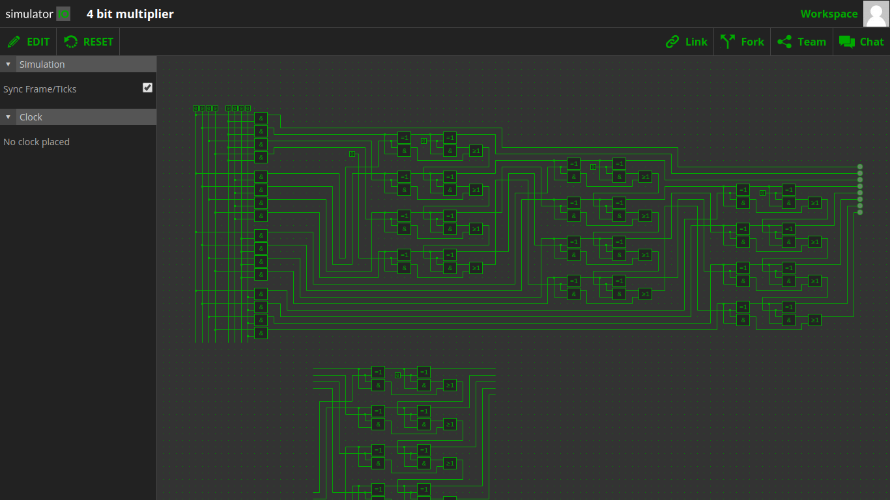
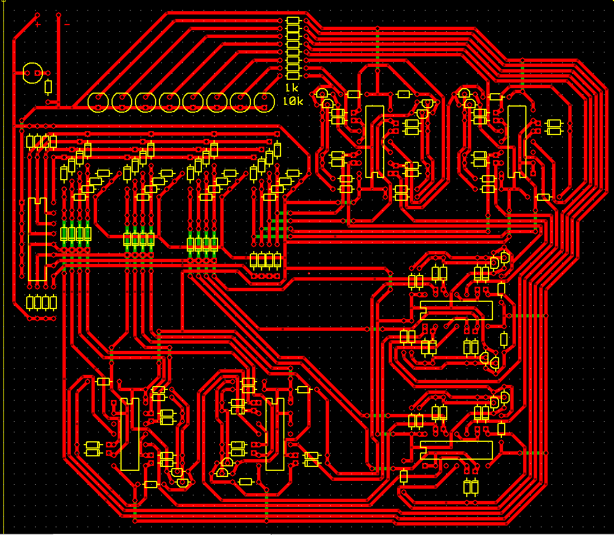
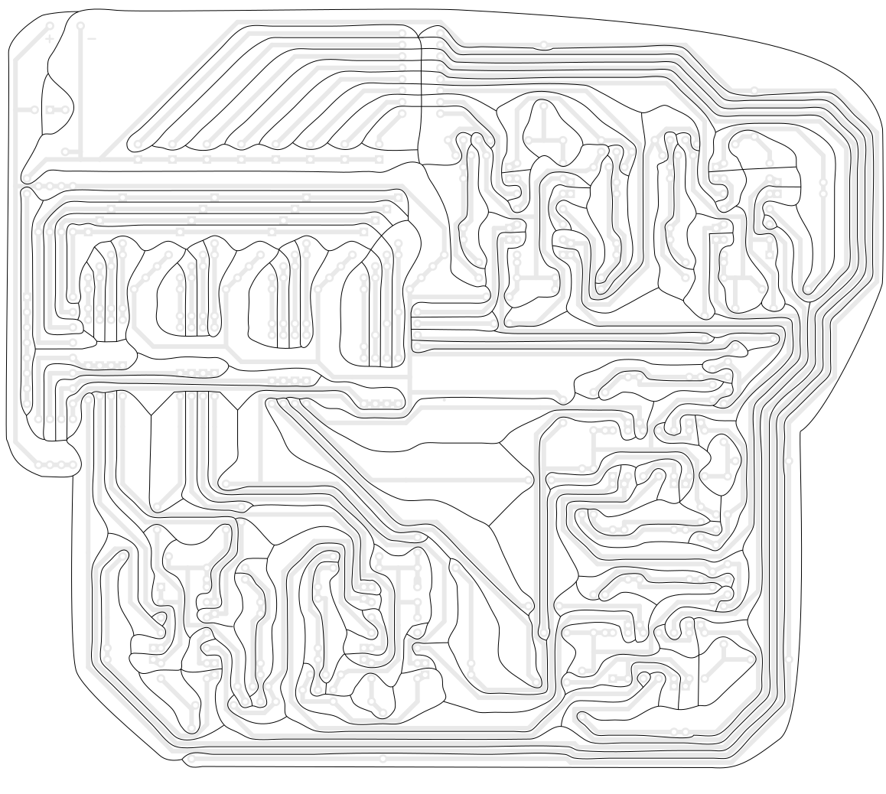
前一陣子在學怎麼做電路板時就想玩玩邏輯門，所以就做了個4位元乘法器。用了整流子當AND，NPN電晶體當OR，XOR有點複雜所以直接用了CD4070。因為版子上的洞很多，所以想說乾脆用CNC車床來刻。試了幾種刻法後，最後是先在版子上噴漆，然後讓機器打洞跟刻出電路，最後再用化學藥劑把露出的銅吃掉。
影片：
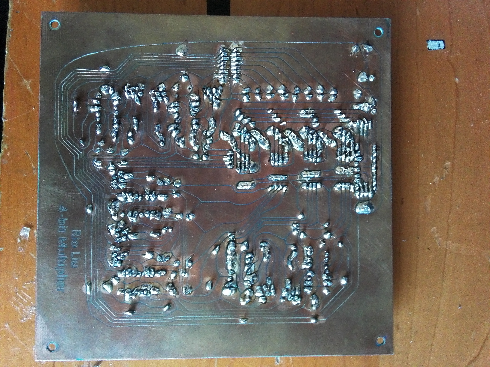
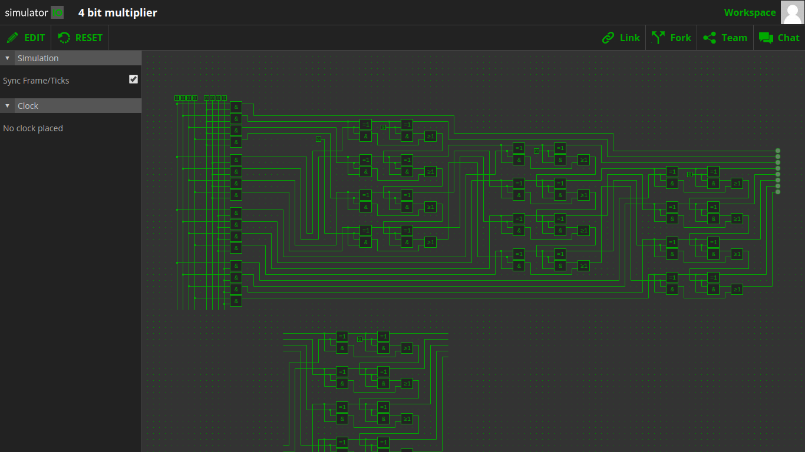
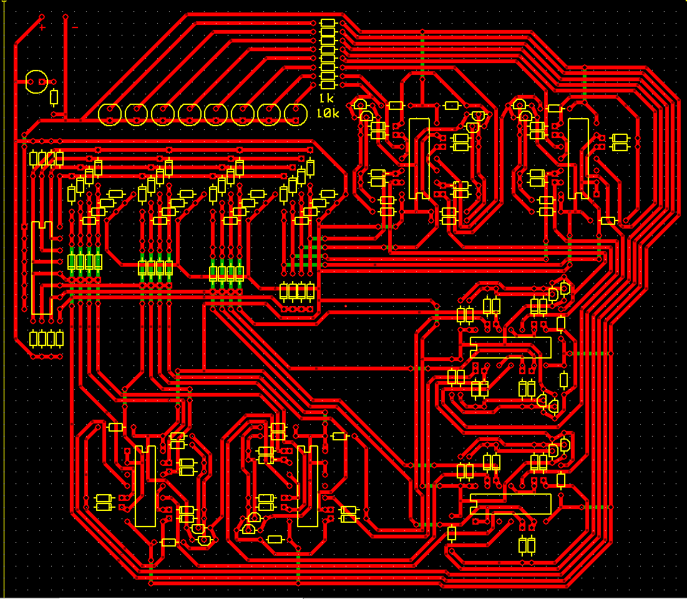
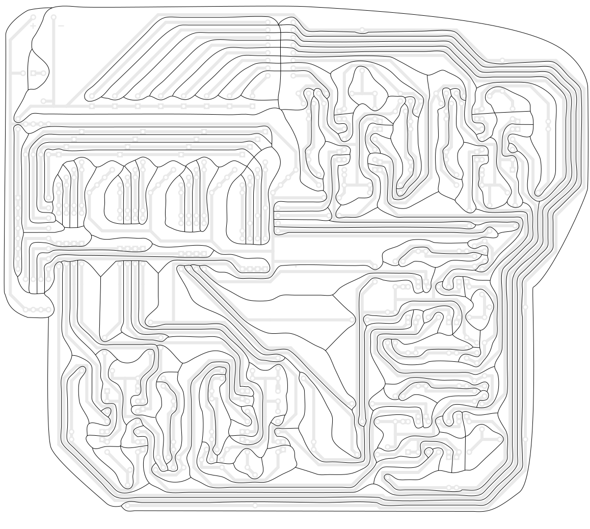